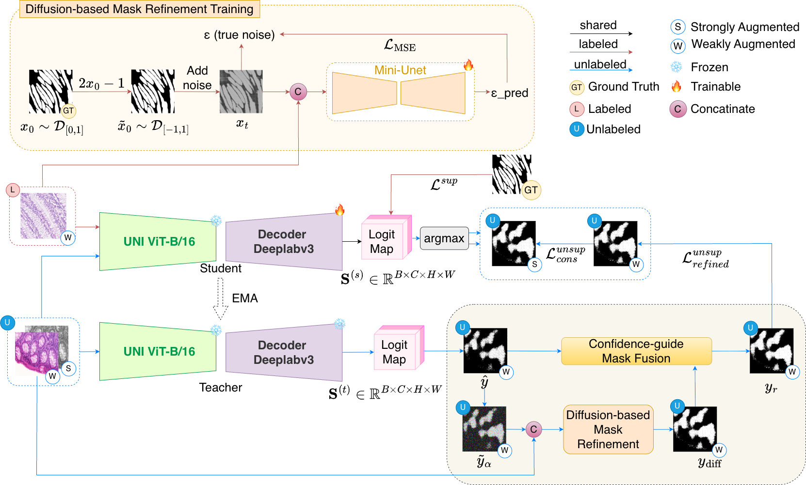
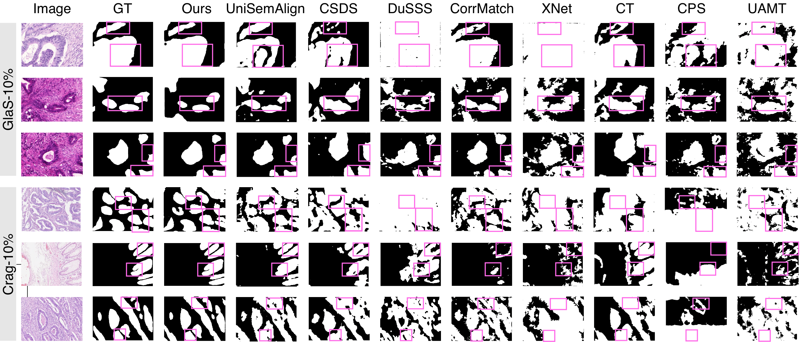

TL;DR
Teacher pseudo-labels in semi-supervised histopathology segmentation fail exactly where it matters: thin gland bridges and ambiguous boundaries. Training on them reinforces the error (confirmation bias). CoDiR sends only the low-confidence pixels through a small conditional diffusion model to repair them, keeps the confident teacher predictions as they are, and weights every pixel by how well teacher and diffusion agree.
(CRAG, 10% labels)
baseline (GlaS, 10%)
only the student runs
Overview
Pixel-level annotation of histopathology images is costly and needs expert pathologists. Semi-supervised teacher–student frameworks reduce that cost, but inaccurate pseudo-labels introduce structural and boundary errors that get reinforced during training. Pathology foundation models such as UNI give strong features. Our earlier UniSemAlign used them to align features, which constrains pseudo-labels only indirectly.
CoDiR acts on the mask itself. A frozen UNI encoder and a DeepLabV3-style decoder form a Mean Teacher segmenter. A low-capacity conditional diffusion model, trained on the labeled subset in the same loop, learns a structural prior over plausible gland shapes. During training, only pixels whose teacher confidence falls below an adaptive threshold are partially noised (SDEdit-style) and denoised by this prior, then fused back with the reliable teacher predictions. On GlaS and CRAG, CoDiR is best on seven of eight benchmark metrics.
Method

- 01
Teacher prediction
The EMA teacher predicts a soft pseudo-mask ŷ for an unlabeled image Iu.
- 02
Confidence gate
c = max(p, 1−p), m = 𝟙(c < τ). τ is an EMA of batch confidence (FreeMatch-style), clamped to [0.60, 0.75].
- 03
Partial noising + denoising
The mask is noised to αn = 0.2 of T = 100 steps, then a mini-UNet runs K reverse DDPM steps conditioned on Iu: ydiff = DenoiseK(ỹα; Iu, θ).
- 04
Confidence-guided fusion
yr = m ⊙ ydiff + (1 − m) ⊙ ŷ. Only uncertain pixels change; reliable structure is never corrupted.
- 05
Confidence weighting
w = cteacher · cdiffeff. Pixels where teacher and diffusion agree weigh more in the unsupervised loss.
Interactive pipeline explainer
Open full screen ↗Click any of the 12 assemblies, drag τ, αn and K, and follow one pseudo-label from teacher output to refined mask.
Comparison with the state of the art
Bold = best, underline = second best among semi-supervised methods. Fully-supervised (100% labels): GlaS 89.59 / 81.84, CRAG 92.68 / 86.36. Baselines from UniSemAlign, same protocol.
Qualitative comparison (10% labels)

Ablations · GlaS, 10% labels, mean ± std over 3 seeds
Citation
@inproceedings{pham2026codir,
title = {CoDiR: Confidence-Guided Diffusion Refinement for Semi-Supervised Histopathology Segmentation},
author = {Pham, Hoai Nhan and Bui, Dang-Nguyen and Thai, Le-Van and Vo, Thanh-Hiep and Dinh Thi, Lan Anh and Nguyen, Tien Dat and Nguyen, Duy-Dong and Bui, Ngoc Lam Quang and Tran, Tam and Huang, Zhi},
booktitle = {Medical Image Computing and Computer Assisted Intervention (MICCAI)},
year = {2026}
}